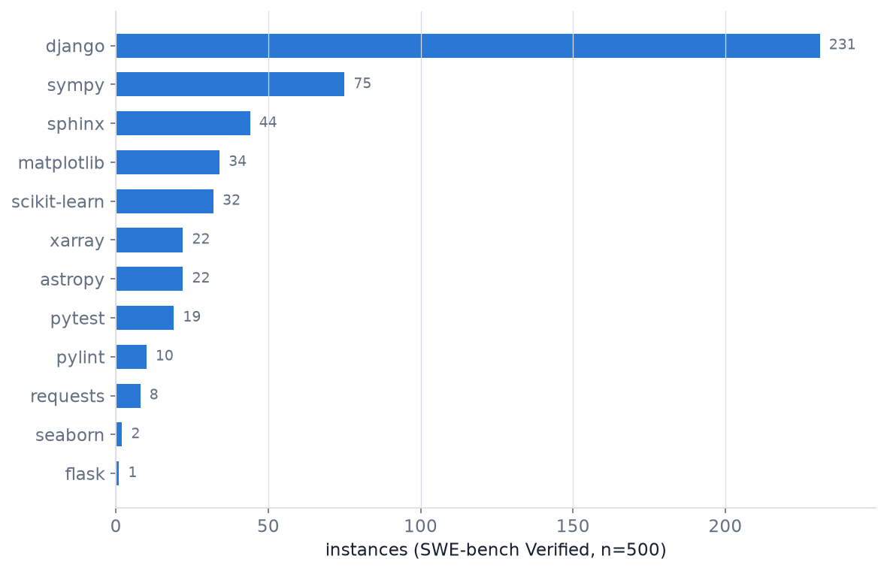
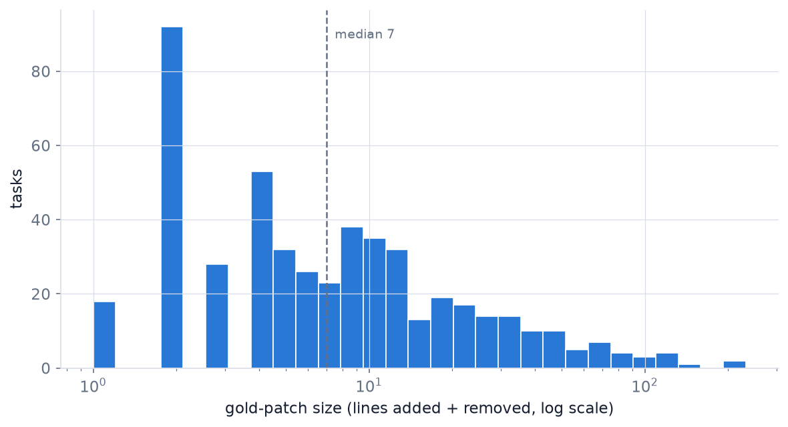
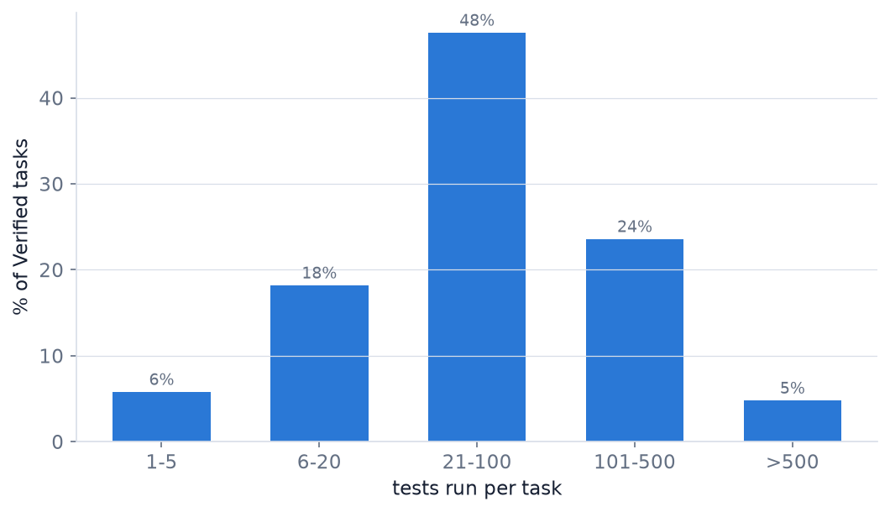
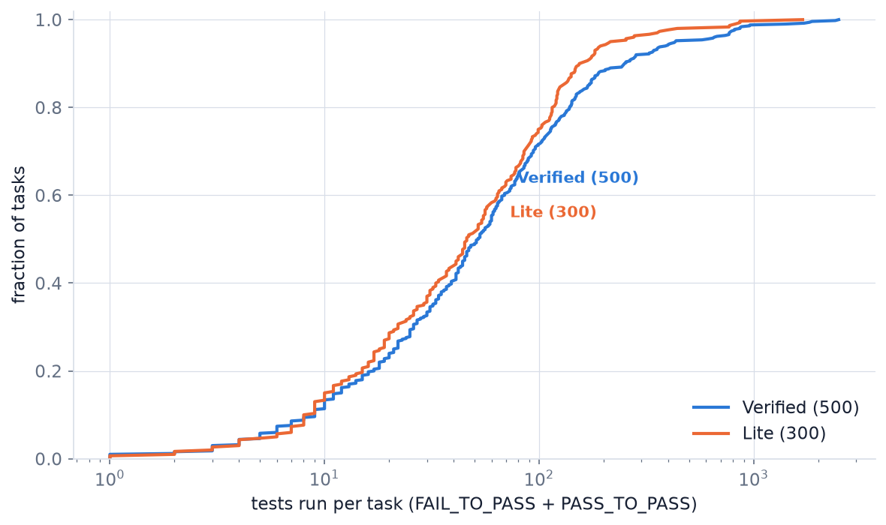

SWE-bench on a CPU-only Box — Task Taxonomy & Tool-Cost Profiling Plan
Everything in SWE-bench except the model's thinking runs on CPU: dataset, Docker task images, test execution, gold-patch validation. This report covers the full task analysis of Verified 500 and Lite 300, gold-patch validation (10/10 resolved), and the measured per-tool cost profile — CPU-seconds, peak RSS, and DRAM bandwidth per instance — that feeds a resource-faithful replay harness.
Overview
Companion to the TraceLab reproduction. TraceLab showed when tool waits and human idle stress the KV cache; SWE-bench supplies the missing other half — what the tools actually cost in CPU time and memory bandwidth, measured on a real benchmark with known-correct (gold) patches, no model required.
1Why SWE-bench, and why CPU-only is enough
SWE-bench tasks are real GitHub issues: a repo at a buggy commit, the issue text, a hidden human fix (the gold patch), and the tests that must flip from fail to pass. The benchmark splits cleanly into two halves:
| Half | What it needs | This machine |
|---|---|---|
| Solving (model thinks) | GPU or API inference | API only (no GPU) |
| Environment & tools | CPU + disk + Docker: checkout, patch, pytest | 64 cores / 251 GB RAM ✓ |
sleep() with real STREAM-style memory load.2Setup & dataset download (done)
Workspace on the 17 TB volume (02_aa/001_swebench/), venv via uv, HF cache kept inside the workspace so nothing touches the nearly-full root disk.
uv venv .venv && uv pip install swebench datasets pandas matplotlib pyarrow # swebench 4.1.0 · datasets 5.0.1 · pandas 3.0.5 (Python 3.14) HF_HOME=./hf_cache load_dataset("SWE-bench/SWE-bench_Verified", split="test") # 500 rows ✓ asserted load_dataset("princeton-nlp/SWE-bench_Lite", split="test") # 300 rows ✓ asserted
Each instance carries: instance_id, repo, base_commit, patch (gold), test_patch, problem_statement, version, environment_setup_commit, and the test lists FAIL_TO_PASS / PASS_TO_PASS. Verified additionally ships a human difficulty label: 194 tasks <15 min, 261 at 15 min–1 h, 42 at 1–4 h, 3 >4 h.
3Task taxonomy — Verified 500
All numbers computed from the downloaded instances (outputs/instances.csv, repo_summary_verified.csv).

| Repo | Tasks | Median tests | p90 tests | Median patch lines |
|---|---|---|---|---|
| django | 231 | 53 | 169 | 6 |
| sympy | 75 | 41 | 109 | 7 |
| sphinx | 44 | 24 | 46 | 7.5 |
| matplotlib | 34 | 182 | 806 | 7 |
| scikit-learn | 32 | 49.5 | 170 | 8 |
| xarray | 22 | 398 | 1,687 | 7 |
| astropy | 22 | 76.5 | 419 | 8 |
| pytest | 19 | 64 | 125 | 7 |
Remaining: pylint 10, requests 8, seaborn 2, flask 1. Full table in outputs/repo_summary_verified.csv.
The gold patches are strikingly small — median 7 lines changed in 1 file (p90: 33 lines) — while the tests that must run to validate them span 1 to 2,488. The tool cost of a task is set by its test suite, not its fix size.

4Light vs heavy tool mass — the structure the replay harness needs
Bucketing tasks by how many tests the harness runs (FAIL_TO_PASS + PASS_TO_PASS) gives the light-mass / heavy-tail split directly:


The heavy tail is also repo-structured, which makes it samplable: xarray (median 398 tests) and matplotlib (median 182, p90 806) are the heavy-integration repos, while sphinx (median 24) and pylint (median 18.5) are the light-unit end — a stratified profiling sample can cover the whole spectrum with a few dozen instances.
5Tool-cost profiling design (특성 4 measurement)
Written and ready at scripts/profile_tool_cost.py: it wraps the gold-patch harness and samples each evaluation container's cgroup-v2 counters while tests run.
| Metric | Source | Needs root? |
|---|---|---|
| CPU user/system seconds | cpu.stat (cgroup v2, per container) | No |
| Peak memory (RSS) | memory.peak | No |
| Wall time per instance | container lifetime | No |
| Memory bandwidth (GB/s) | perf uncore IMC CAS counters, or Intel PCM | Yes (install perf, lower perf_event_paranoid) |
The bandwidth row is the STREAM-style number: (cas_read + cas_write) × 64 B / elapsed. Per tool invocation, the recorded triple (duration, CPU-s, GB/s) becomes the replay harness's input — each replayed tool call generates an actual memory load of the measured intensity for the measured duration instead of sleeping, so KV offload/prefetch policies are evaluated under true memory-bandwidth contention.
Profiling protocol: --max_workers 1 for uncontended per-instance numbers; stratified sample across the §4 buckets (light sphinx/pylint → heavy xarray/matplotlib); repeat runs to separate image-pull/build cost from steady-state test cost.
Measured results — 10-instance stratified sample, all gold-resolved
Both gates were cleared and the profile was run: 10 Lite instances spanning 1→863 tests, each container sampled at 0.5 s via cgroup v2, with a parallel perf IMC log (1 s, all 8 memory controllers) aligned to each container's lifetime. Full table: outputs/tool_cost_table.csv.
| Instance | Tests | Wall s | CPU s | Peak RSS MB | ΔBW GB/s |
|---|---|---|---|---|---|
| django-12113 | 1 | 24.2 | 11.6 | 148 | +1.2 |
| seaborn-3010 | 3 | 28.5 | 18.5 | 103 | +3.6 |
| django-13447 | 6 | 26.9 | 11.9 | 103 | −0.5 |
| xarray-4248 | 19 | 24.3 | 23.8 | 213 | +1.4 |
| django-14787 | 21 | 25.9 | 10.9 | 101 | −0.2 |
| requests-863 | 64 | 41.4 | 5.0 | 43 | +1.5 |
| django-12708 | 102 | 25.9 | 12.3 | 162 | +0.6 |
| sphinx-8474 | 440 | 54.9 | 40.2 | 198 | −2.3 |
| matplotlib-24149 | 768 | 189.0 | 235.1 | 415 | −1.5 |
| xarray-4094 | 863 | 39.9 | 41.1 | 264 | −0.6 |
ΔBW = container-window average system DRAM bandwidth minus the shared-box baseline (~9.8 GB/s median; other users' jobs run on this 64-core machine, so per-instance attribution is approximate). Transient peaks reached ~47 GB/s.
- Fixed overhead dominates the light mass. Even the 1-test task costs ~24 s wall / ~11 CPU-s — container start, repo checkout, patch apply, and test-framework boot form a floor that swamps the actual test.
- The tail is compute-bound and framework-dependent. matplotlib's 768-test run: 235 CPU-s over 189 s wall (parallel execution, CPU > wall). But xarray's 863 tests took only 41 CPU-s — per-test weight varies ~10× by framework, so test count alone doesn't predict cost.
- Test execution barely loads DRAM. Average deltas sit within ±4 GB/s of baseline on a machine with hundreds of GB/s of memory bandwidth. Tool waits leave the memory system essentially idle — KV offload/prefetch transfers can hide under tool execution without contending with it. The replay harness should model a modest average load with short bursts, not a saturated bus.
6Machine gates & runbook
Verified on this box: 64 cores, 251 GB RAM, no GPU, DockerHub + HuggingFace reachable, cgroup v2 present. Two one-time root actions gated the Docker-dependent steps — both are now cleared (full commands in 001_swebench/RUNBOOK.md):
| Gate | Problem | Fix applied (root, one time) | Status |
|---|---|---|---|
| 1 · Docker data-root | /var/lib/docker was on / — 64 GB, ~93% full; SWE-bench needs ≥120 GB | data-root moved to /home/docker-data (17 TB) via daemon.json; images/containers preserved | DONE ✓ |
| 2 · perf / PCM | no perf; perf_event_paranoid=4 | linux-tools installed; paranoid=1; IMC CAS counters verified (raw event=0x05 on Xeon 4514Y) | DONE ✓ |
DOCKER_CLIENT_TIMEOUT=600). Profiling sample: 10/10 gold-resolved.7Status & next steps
- Gate 1 + gold sanity — DONE. Docker relocated; 3/3 Lite instances resolved with gold patches.
- Profile — DONE (first pass). 10-instance stratified sample, all gold-resolved, per-instance (wall, CPU-s, RSS, ΔGB/s) in §5. Next refinement: repeat runs for variance, and separate patch-apply vs test-run phases within each container.
- Scale gold validation. All of Lite (300) at
--max_workers 24,--cache_level env --clean Trueto bound disk — mechanical from here. - Own agent traces. Claude Code (API inference, local tools) on SWE-bench tasks, captured with the TraceLab pipeline — cross-validation against the released 4,265-session corpus.
- Feed the replay harness. The measured profile says: modest average DRAM load with bursts, big fixed per-invocation overhead, compute-bound tail. Replace
sleep()with that shape — not a saturated STREAM loop.